Theme "The Living Wisdom" เฟส 1 — ภาพก่อน/หลัง (PNG เท่านั้น)
หน้ารายงานภายใน ไม่ใช่ส่วนของเว็บจริง · ภาพจาก Chromium (vite preview) ความกว้าง 1280 และ 390px · กดภาพเพื่อดูขนาดเต็ม
ภาพเต็มหน้าที่ 1280px: พื้นหลังไล่เฉดใช้ background-attachment: fixed จึงเห็นไล่เฉดเฉพาะช่วงจอแรกในภาพเต็มหน้า (ตอนเลื่อนจริงพื้นหลังอยู่กับจอ) · ป้ายที่อยู่นอกจอแสดงเป็นช่องว่างเพราะโหลดตามจอ (เหมือนก่อนแก้)
หน้าแรก · 1280px

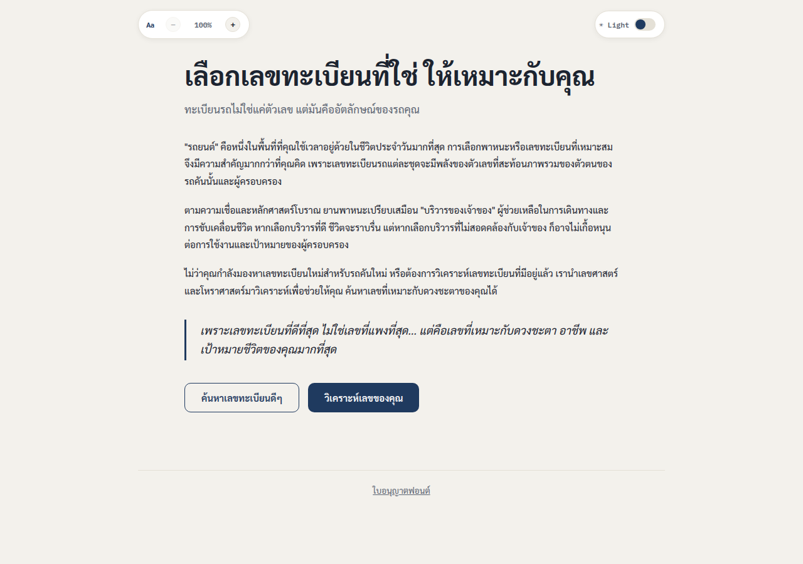

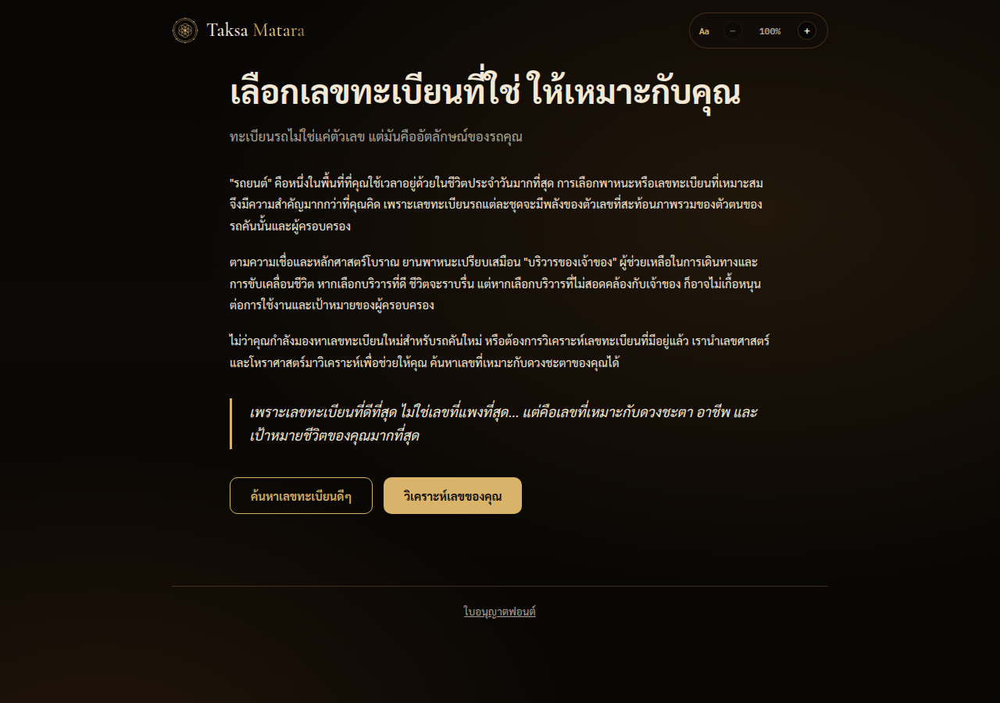
หน้าแรก · 390px

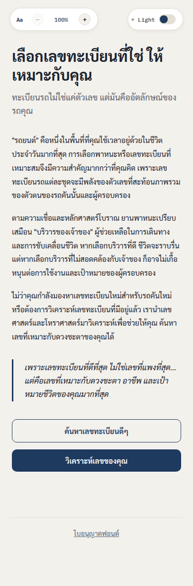

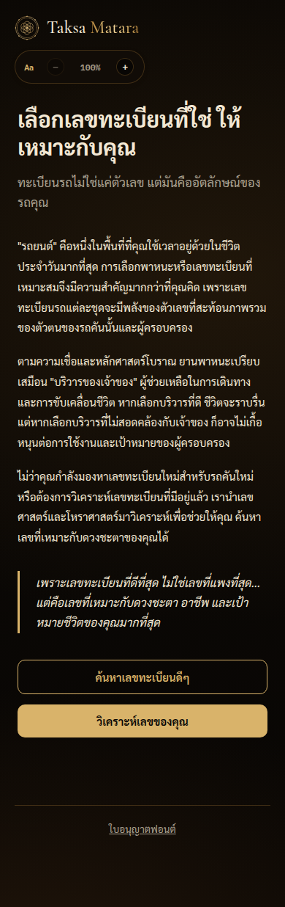
#single (5 ป้าย: 9959, 01, 45, 1245, 12) · 1280px

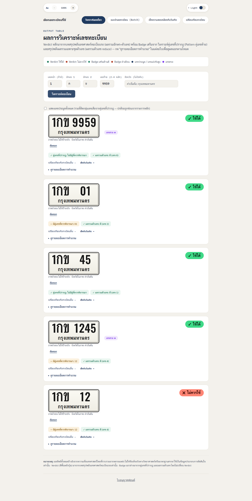

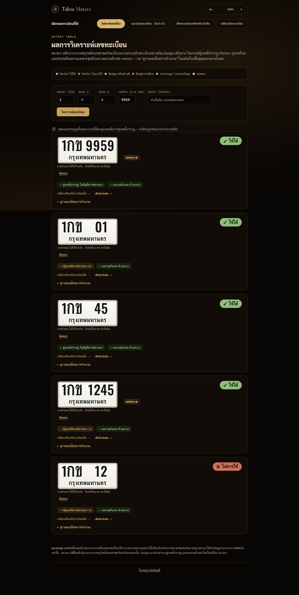
#single (5 ป้าย: 9959, 01, 45, 1245, 12) · 390px

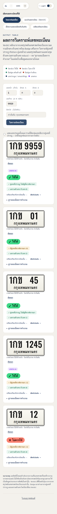

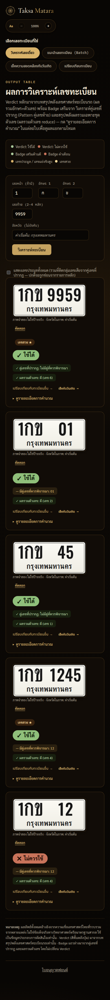
#batch Top 30 (1 กข) · 1280px

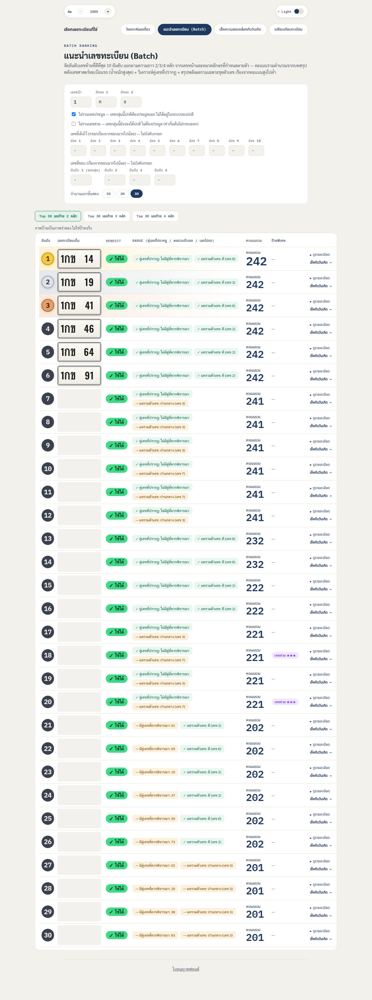

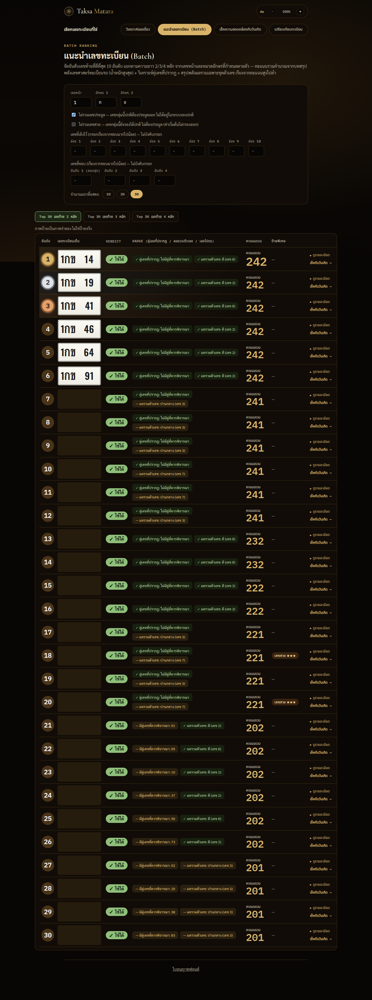
#batch Top 30 (1 กข) · 390px

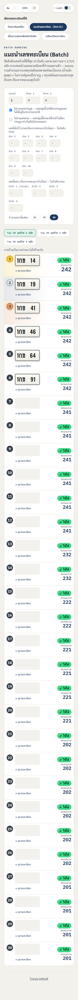

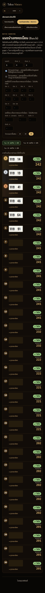
หน้าเปรียบเทียบ (01 กับ 45) · 1280px

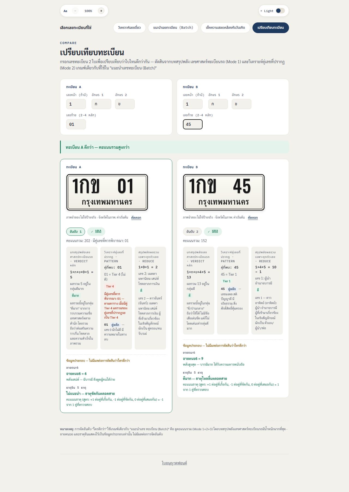

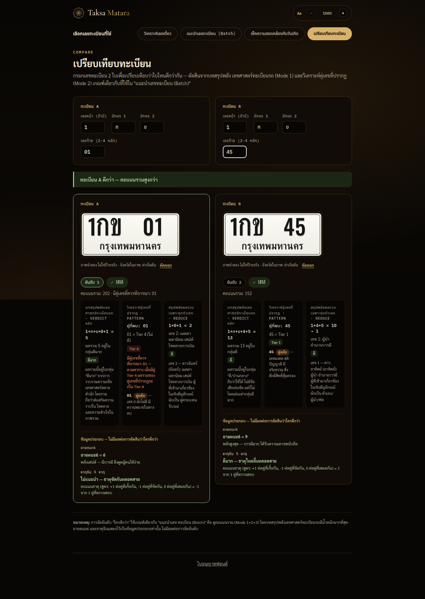
หน้าเปรียบเทียบ (01 กับ 45) · 390px

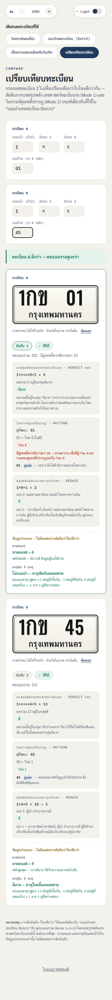

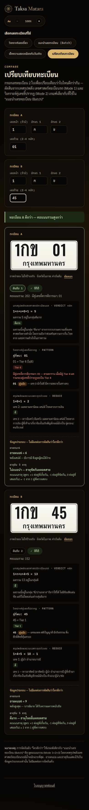